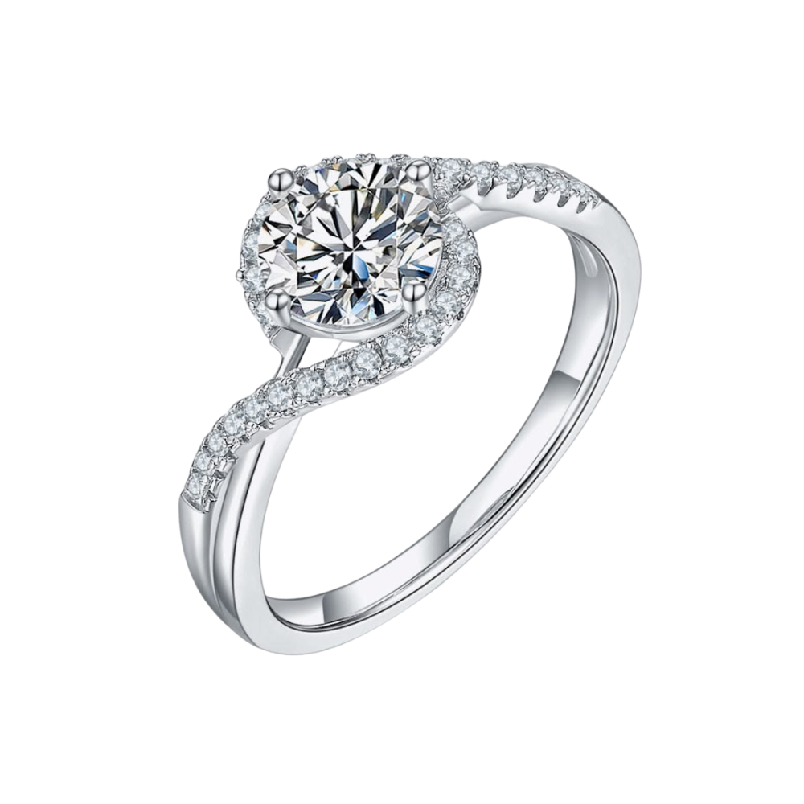
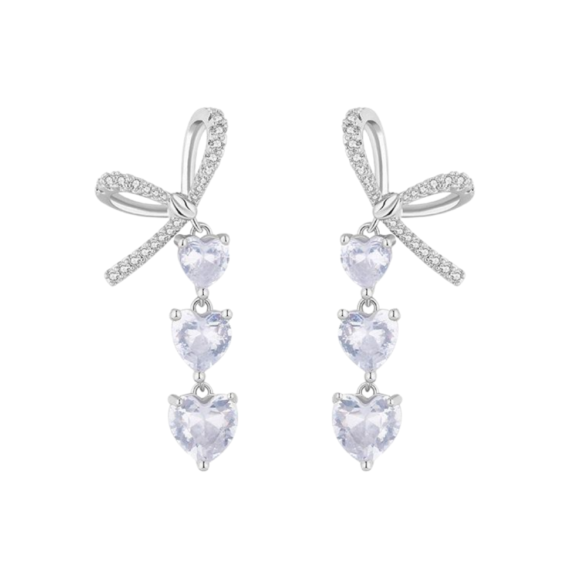
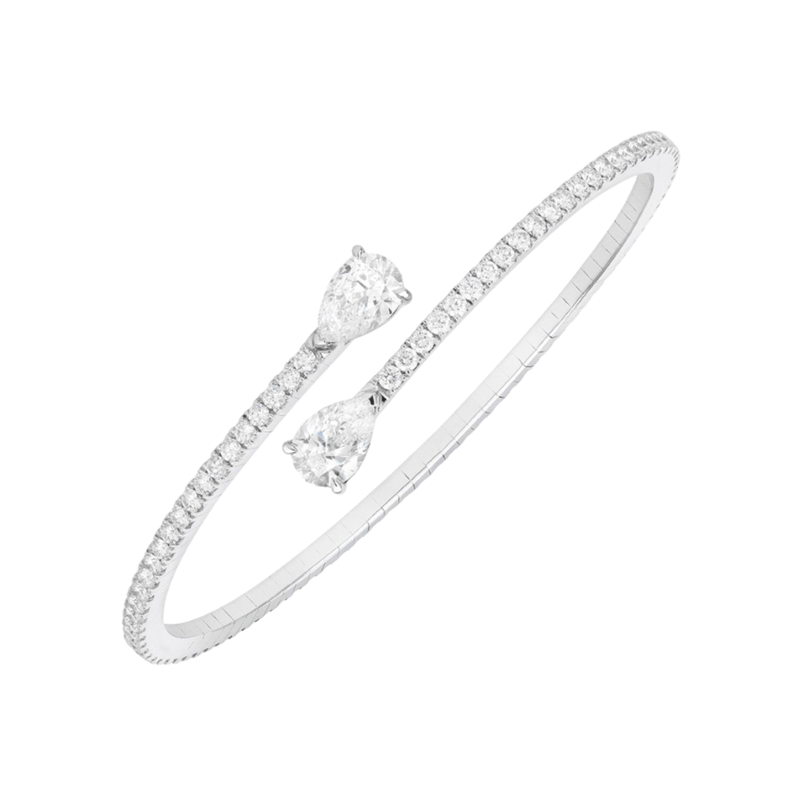

Каблучка «Аврора»
Срібло 925°, діамант 0.2 карата
12 400 ₴
you can make the whole place shimmer – кросплатформний застосунок ювелірного салону
Rhodanthe – це кросплатформний застосунок для ювелірного салону, який працює у браузері на різних пристроях: комп'ютерах, планшетах і смартфонах. Застосунок дозволяє клієнтам переглядати каталог ювелірних виробів, ознайомлюватися з описом та характеристиками кожної позиції, додавати вироби до обраного або кошика замовлення, а також записуватися на консультацію чи примірку в салоні.
Для створення інтерфейсу використано HTML і CSS, а для взаємодії з користувачем - JavaScript.

Срібло 925°, діамант 0.2 карата
12 400 ₴

Срібло 925°, місячний камінь
3 200 ₴

Срібло 925°, діамант
8 750 ₴
Поки що тут порожньо. Додайте вироби з каталогу вище.
Для цього прикладу використано WebView-підхід, оскільки застосунок реалізовано за допомогою вебтехнологій і він може запускатися у браузері або бути вбудованим у мобільний застосунок через WebView. Такий підхід дозволяє використовувати єдину кодову базу для веб-версії та мобільного застосунку, що значно спрощує розробку та підтримку.
| Компонент | Технологія |
|---|---|
| Структура сторінки | HTML |
| Оформлення | CSS |
| Логіка | JavaScript |
| Платформа запуску | Браузер / WebView |